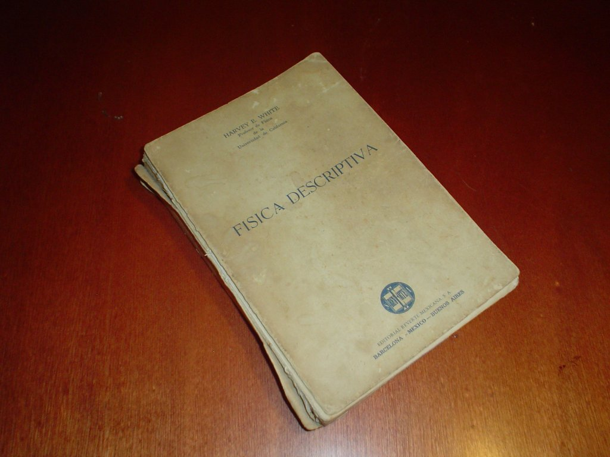
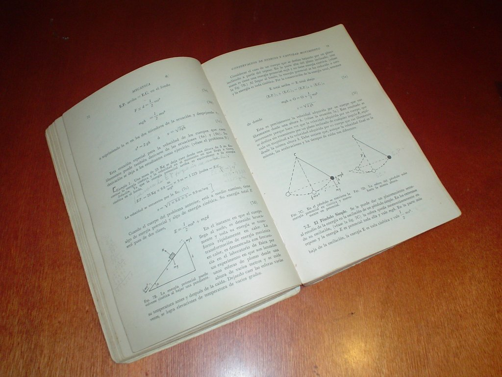
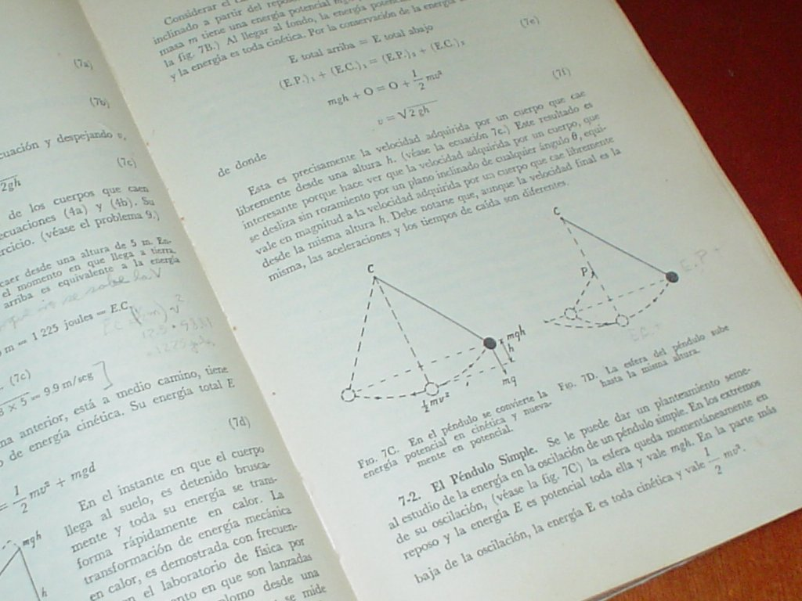
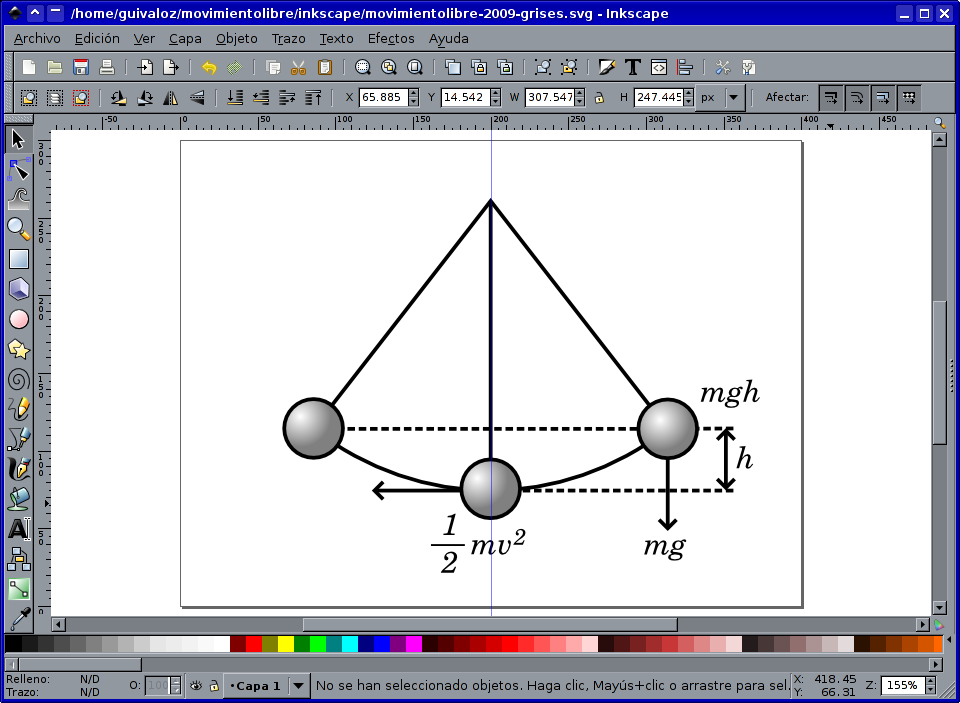
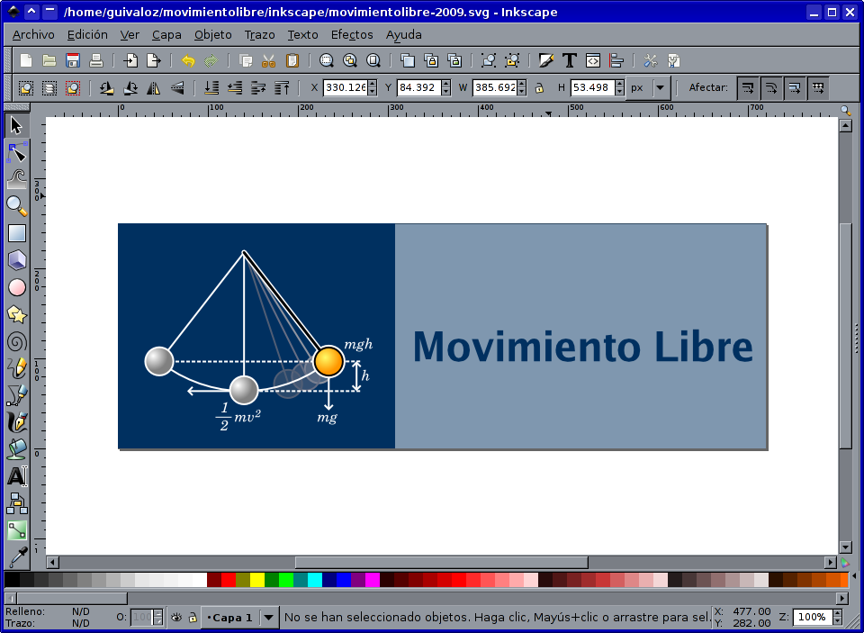
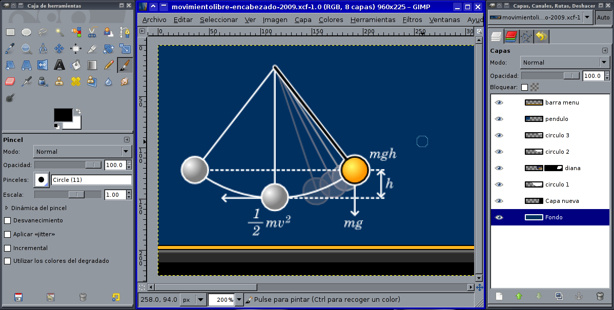

Nueva imagen y logotipo para Movimiento Libre
He dedicado varios días para renovar al sitio de Movimiento Libre. La gran pregunta que tuve en mi cabeza fué... ¿qué logotipo se podría elaborar para Movimiento Libre?.
El título Movimiento Libre viene del Movimiento del Software Libre. La intensión primordial de hablar de Software Libre se lleva muy bien con este título. Desde la primer publicación (el 8 de mayo de 2007) tomé la imagen de la niña en el columpio, en este juego (con la mentalidad de un niño) tratamos de liberarnos de la Tierra y ¡salir volando!.
Por otro lado, simpatizo con todas las ciencias, pero más con la física. Así que busqué inspiración en una de mis antigüedades más preciadas, el libro Física Descriptiva de Harvey E. White.



En este libro explica la mecánica newtoniana de Issac Newton. Encontré en éste el diagrama que explica el péndulo (columpio) y me pareció bastante apropiado usarlo como logotipo. Recordemos que el Software Libre tiene muchas similitudes con la Ciencia.
Para elaborarlo usé primero el Inkscape para trazar el diagrama del péndulo. Luego le apliqué los colores que ha usado Movimiento Libre. En GIMP combiné el diagrama con la fotografía de la niña en el columpio para crear la imagen-encabezado.



La renovación también ha involucrado un nuevo pero más sencillo CSS y mejoras en el código del CMS de Movimiento Libre. Posteriormente tocaré ambos temas.